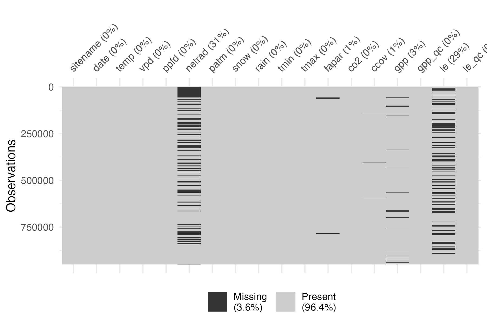
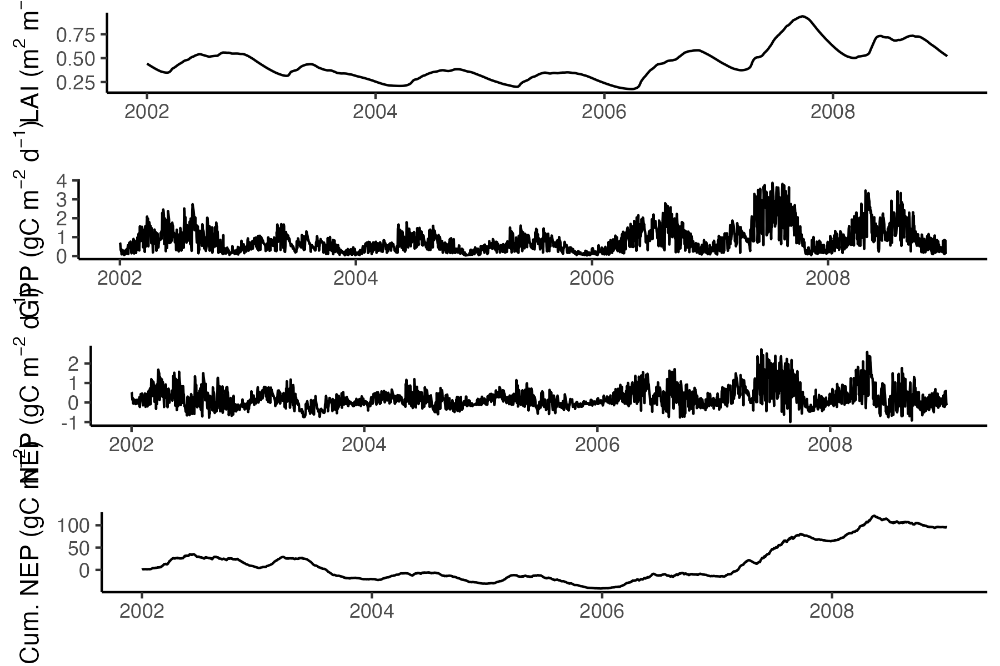
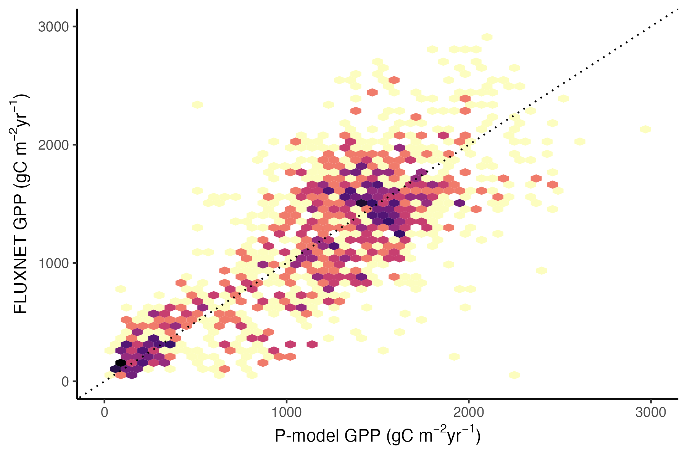

# some general libraries
library(dplyr)
library(tidyr)
library(ggplot2)
library(here)
library(visdat)
library(lubridate)Aim
Simulations with the P-model, implemented in {rsofun}, rely on forcing data in the form of time series of all input variables, provided at the time scale of the model time step (daily). The model output is at the same time steps, covering the same time span (entire years) as the forcing data.
This vignette demonstrates the use of {rsofun} for an ensemble of site-level (i.e. point-scale) P-model simulations at a network of sites for which specifically formatted data of meteorological variables are available and used as model forcing. Here, we use data from the FLUXNET network of ecosystem flux measurements, providing observations of CO2, latent and sensible heat fluxes and parallel measurements of meteorological variables. We compare model outputs of gross primary production (GPP, the ecosystem-level CO2 uptake driven by photosynthesis) to observation-based daily values available from FLUXNET data.
The P-model can be used to simulate GPP, given climatic variables, and given the fraction of absorbed photosynthetically active radiation (fAPAR). The latter reflects vegetation greenness and is estimated from satellite remote sensing. The source of this data is MODIS FPAR here and used in combination with FLUXNET estimates of meteorological variables.
The model can also be used for arbitrary locations for which forcing data is generated from global map data. This is demonstrated in a separate vignette.
Installation
{rsofun} is not on CRAN. Install the current version from the main branch directly from GitHub.
# geco-bern packages not on CRAN
if(!require(remotes)){install.packages(remotes)}## Loading required package: remotes
remotes::install_github("geco-bern/rsofun", ref = "v5.1.0")## Using github PAT from envvar GITHUB_PAT. Use `gitcreds::gitcreds_set()` and unset GITHUB_PAT in .Renviron (or elsewhere) if you want to use the more secure git credential store instead.## Downloading GitHub repo geco-bern/rsofun@v5.1.0## RcppParallel (NA -> 5.1.11-1 ) [CRAN]
## stringfish (NA -> 0.17.0 ) [CRAN]
## cpp11 (NA -> 0.5.2 ) [CRAN]
## coda (NA -> 0.19-4.1 ) [CRAN]
## Brobdingnag (NA -> 1.2-9 ) [CRAN]
## mvtnorm (NA -> 1.3-3 ) [CRAN]
## rbibutils (NA -> 2.4 ) [CRAN]
## data.table (NA -> 1.17.8 ) [CRAN]
## crosstalk (NA -> 1.2.2 ) [CRAN]
## lazyeval (NA -> 0.2.2 ) [CRAN]
## tidyr (1.3.1 -> 1.3.2 ) [CRAN]
## httr (NA -> 1.4.7 ) [CRAN]
## Rdpack (NA -> 2.6.4 ) [CRAN]
## plotly (NA -> 4.11.0 ) [CRAN]
## gap.datasets (NA -> 0.0.6 ) [CRAN]
## iterators (NA -> 1.0.14 ) [CRAN]
## foreach (NA -> 1.5.2 ) [CRAN]
## doParallel (NA -> 1.0.17 ) [CRAN]
## plyr (NA -> 1.8.9 ) [CRAN]
## zoo (NA -> 1.8-15 ) [CRAN]
## RcppEigen (NA -> 0.3.4.0.2 ) [CRAN]
## reformulas (NA -> 0.4.3 ) [CRAN]
## nloptr (NA -> 2.2.1 ) [CRAN]
## minqa (NA -> 1.2.8 ) [CRAN]
## lme4 (NA -> 1.1-38 ) [CRAN]
## qgam (NA -> 2.0.0 ) [CRAN]
## ape (NA -> 5.8-1 ) [CRAN]
## lmtest (NA -> 0.9-40 ) [CRAN]
## gap (NA -> 1.6 ) [CRAN]
## expm (NA -> 1.0-0 ) [CRAN]
## sandwich (NA -> 3.1-1 ) [CRAN]
## gmm (NA -> 1.9-1 ) [CRAN]
## qs2 (NA -> 0.1.6 ) [CRAN]
## bridgesam... (NA -> 1.2-1 ) [CRAN]
## DHARMa (NA -> 0.4.7 ) [CRAN]
## msm (NA -> 1.8.2 ) [CRAN]
## numDeriv (NA -> 2016.8-1.1) [CRAN]
## ellipse (NA -> 0.5.0 ) [CRAN]
## IDPmisc (NA -> 1.1.21 ) [CRAN]
## tmvtnorm (NA -> 1.7 ) [CRAN]
## emulator (NA -> 1.2-24 ) [CRAN]
## multidplyr (NA -> 0.1.4 ) [CRAN]
## BayesianT... (NA -> 0.1.8 ) [CRAN]
## GenSA (NA -> 1.1.15 ) [CRAN]## Installing 44 packages: RcppParallel, stringfish, cpp11, coda, Brobdingnag, mvtnorm, rbibutils, data.table, crosstalk, lazyeval, tidyr, httr, Rdpack, plotly, gap.datasets, iterators, foreach, doParallel, plyr, zoo, RcppEigen, reformulas, nloptr, minqa, lme4, qgam, ape, lmtest, gap, expm, sandwich, gmm, qs2, bridgesampling, DHARMa, msm, numDeriv, ellipse, IDPmisc, tmvtnorm, emulator, multidplyr, BayesianTools, GenSA## Installing packages into '/home/runner/work/_temp/Library'
## (as 'lib' is unspecified)## ── R CMD build ─────────────────────────────────────────────────────────────────
## * checking for file ‘/tmp/RtmpSc9J4O/remotes352f278a541a/geco-bern-rsofun-7aeffd0/DESCRIPTION’ ... OK
## * preparing ‘rsofun’:
## * checking DESCRIPTION meta-information ... OK
## * cleaning src
## * checking for LF line-endings in source and make files and shell scripts
## * checking for empty or unneeded directories
## * building ‘rsofun_5.1.0.tar.gz’## Installing package into '/home/runner/work/_temp/Library'
## (as 'lib' is unspecified)Load the data
Required model forcing variables are documented here. The model forcing, site, and simulation parameters are contained in a model driver object. This object is fromatted in a tidy shape with sites organised along rows and forcing time series, site and simulation parameters wrapped into cells, separate for each site. Each row provides the model driver information for one site-level simulation.
## # A tibble: 1 × 4
## sitename params_siml site_info forcing
## <chr> <list> <list> <list>
## 1 FR-Pue <tibble [1 × 11]> <tibble [1 × 4]> <tibble [2,190 × 13]>The model driver object is constructed from data collected and processed (unit conversion, some limited additional gap-filling) from FLUXNET-standard data, obtained from regional networks and previous collection efforts (ICOS, AmeriFlux, PLUMBER-2, etc). The model driver object is made available on Zenodo:
Hufkens, K., & Stocker, B. (2024). FluxDataKit v3.1: A comprehensive data set of ecosystem fluxes for land surface modelling (3.1) [Data set]. Zenodo. https://doi.org/10.5281/zenodo.11370417
Download the files rsofun_driver_data_v3.1.rds,
fdk_site_info.csv, and
fdk_site_fullyearsequence.csv and place them locally. They
are not included in the repository rsofundemo. You can do the
download manually and then read the files into your R session, pointing
to their local path. Alternatively, use the package zen4R
to download. Both variants are shown below:
# Variant 1) load the manually downloaded file:
driver <- readRDS("~/data/FluxDataKit/v3.2/rsofun_driver_data_v3.2.rds")
fdk_site_info <- tibble(read.csv("~/data/FluxDataKit/v3.2/fdk_site_info.csv"))
fdk_site_fullyearsequence <- tibble(read.csv("~/data/FluxDataKit/v3.2/fdk_site_fullyearsequence.csv"))
# Variant 2) or automatically download and load the file:
library(zen4R) # install.packages("zen4R")
download_path <- tempdir()
zen4R::download_zenodo(
path = download_path,
"10.5281/zenodo.12092555",
files = c("rsofun_driver_data_v3.2.rds",
"fdk_site_info.csv",
"fdk_site_fullyearsequence.csv")
)
driver <- readRDS(file.path(download_path, "rsofun_driver_data_v3.2.rds"))
fdk_site_info <- tibble(read.csv(file.path(download_path, "fdk_site_info.csv")))
fdk_site_fullyearsequence <- tibble(read.csv(file.path(download_path, "fdk_site_fullyearsequence.csv")))Check for missing values in the forcing data.

We see that some variables have missing data. Net radiation being
missing is not a problem as it is currently internally estimated and not
taken from the forcing. However, missing data in fapar,
co2, patm, and ccov are a
problem. Determine the sites for which those missing data appear and
exclude them.
exclude_sites <- driver |>
select(sitename, forcing) |>
unnest(forcing) |>
group_by(sitename) |>
summarise(across(all_of(c("fapar", "co2", "patm", "ccov", "temp")), ~sum(is.na(.)))) |>
pivot_longer(all_of(c("fapar", "co2", "patm", "ccov")), names_to = "var", values_to = "val") |>
filter(val > 0) |>
pull(sitename)This data exclusion is not nice. It should be solved at the level of
FluxDataKit. Here, drop corresponding rows from driver.
Run the model
Model parameters are kept separate from the driver object. These are not the same as simulation or site parameters, but are to be calibrated, given data. For demonstration, we use parameter values obtained from a prior calibration.
params_modl <- list(
kphio = 0.04998, # setup ORG in Stocker et al. 2020 GMD
kphio_par_a = 0.0, # set to zero to disable temperature-dependence of kphio
kphio_par_b = 1.0,
soilm_thetastar = 0.6 * 240, # to recover old setup with soil moisture stress
soilm_betao = 0.0,
beta_unitcostratio = 146.0,
rd_to_vcmax = 0.014, # value from Atkin et al. 2015 for C3 herbaceous
tau_acclim = 30.0,
kc_jmax = 0.41
)With all data prepared we can now run the P-model using the function
runread_pmodel_f() from the {rsofun} package. This function
takes the nested data structure and runs the model site by site,
returning nested model output results matching the input drivers.
output <- rsofun::runread_pmodel_f(
driver,
par = params_modl
)Evaluate model
The driver object obtained from FluxDataKit contains also time series of ecosystem fluxes. In the present context, these can be used for comparison to model outputs.
Time series for single site
Let’s compare model outputs and observations for GPP of a single site - FR-Pue an evergreen broadleaved forest in a Mediterranean climate.
Combine model outputs and observations into a single data frame.
# first take model outputs
df <- output |>
filter(sitename == "FR-Pue") |>
select(data) |>
unnest(data) |>
select(date, gpp_mod = gpp) |>
left_join(
# merge with observations
driver |>
filter(sitename == "FR-Pue") |>
select(forcing) |>
unnest(forcing) |>
select(date, gpp_obs = gpp),
by = "date"
)Visualise model outputs and observations.
df |>
pivot_longer(starts_with("gpp_")) |>
ggplot(aes(x = date, y = value, color = name)) +
geom_line() +
theme_classic()
Annual totals for all sites
To get annual totals and compare it to observations, we need to consider complete sequences of good-quality observations. We can use information from FluxDataKit for that purpose.
sites <- fdk_site_info |>
dplyr::filter(!(igbp_land_use %in% c("CRO", "WET"))) |>
left_join(
fdk_site_fullyearsequence,
by = "sitename"
) |>
filter(!drop_gpp)Cut driver data to years and sites with good-quality data and combine with outputs.
# daily data
ddf_eval <- driver |>
select(sitename, forcing) |>
filter(sitename %in% sites$sitename) |>
left_join(
sites |>
select(
sitename,
year_start = year_start_gpp,
year_end = year_end_gpp),
by = join_by(sitename)
) |>
unnest(forcing) |>
mutate(year = lubridate::year(date)) |>
filter(year >= year_start & year <= year_end) |>
dplyr::select(sitename, date, gpp_obs = gpp) |>
left_join(
output |>
select(sitename, data) |>
unnest(data) |>
select(sitename, date, gpp_mod = gpp)
)
# annual data
adf_eval <- ddf_eval |>
mutate(year = year(date)) |>
group_by(sitename, year) |>
summarise(across(starts_with("gpp_"), sum))Visualise observed (FLUXNET) vs. modelled (P-model) annual GPP values from all sites and years.
adf_eval |>
ggplot(aes(gpp_mod, gpp_obs)) +
geom_hex(bins = 50, show.legend = FALSE) +
theme_classic() +
geom_abline(intercept = 0, slope = 1, linetype = "dotted") +
scale_fill_viridis_c(trans = "log", option = "magma", direction = -1) +
ylim(0, 3000) +
xlim(0, 3000) +
labs(
x = expression(paste("P-model GPP (gC m"^-2, "yr"^-1, ")")),
y = expression(paste("FLUXNET GPP (gC m"^-2, "yr"^-1, ")"))
)